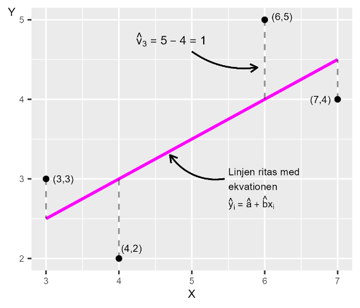

29 Felterm, residual och ett räkneexempel
29.0.2 Teori
Vi har regressionsmodellen:
\[Y = a + bX + V \tag{1}\]
där \(Y\) och \(X\) är variabler, \(a\) och \(b\) är koefficienter som vi vill estimera med minstakvadratmetoden och V är feltermen. Feltermen \(V\) representerar variationen i vår förklarade variabel \(Y\) som inte kan förklaras av regressionsmodellen och variationer i den förklarande variabeln \(X\). Vår regressionsmodell ska idealiskt sett utformas på ett sådant sätt att all variation i Y som beror på andra faktorer ska vara jämnt och slumpmässigt fördelad över feltermernas olika värden. I föregående avsnitt definierade vi predikterade \({\widehat{Y}}_{i} = \widehat{a} + \widehat{b}X_{i}\) och residualen (uppskattade feltermen) som \({\widehat{V}}_{i} = Y_{i} - \widehat{Y_{i}}\). Vi sätter nu in definitionen av \({\widehat{Y}}_{i}\) i vår ekvation för residualen \({\widehat{V}}_{i}\):
\[\widehat{V_{i}} = Y_{i} - \widehat{Y_{i}} = Y_{i} - \left( \widehat{a} + \widehat{b}X_{i} \right) = Y_{i} - \widehat{a} - \widehat{b}X_{i} \tag{2}\]
Detta visar att \({\widehat{V}}_{i}\) är en funktion av observationerna i variablerna \(Y_{i}\) och \(X_{i}\) samt de skattade koefficienterna \(\widehat{a}\) och \(\widehat{b}\).
29.0.2.1 Beräkna \(\widehat{V}\)
Figur 1 visar skattade resultat för \(\widehat{Y}\) och \(\widehat{V}\) från observationerna vi använde i föregående avsnitt. Diagrammet till höger i figuren är samma diagram som vi såg i föregående avsnitt. Värdena för residualen \(\widehat{V}\) kan beskrivas som det vertikala avståndet mellan den diagonala linjen i diagrammet och respektive punkt. För observation 3 i diagrammet har vi skrivit ut beräkningen:
\[{\widehat{V}}_{3} = Y_{3} - {\widehat{Y}}_{3} = 5 - 4 = 1 \tag{3}\]
Notera att även om summan av residualerna alltid är noll
\[\sum_{i}^{\hat{}}V_{i} = 0 \tag{4}\]
så är de ENSKILDA residualerna i regel skilda från noll. Om varje enskild residual vore lika med 0 (\(\widehat{V_{i}} = 0\) för alla \(i\)) skulle alla observationer ligga exakt på regressionslinjen. Detta är i regel varken möjligt eller önskvärt. En regressionsmodell med perfekt fit (\(\widehat{V_{i}} = 0\) för alla \(i\)) kan tyda på: - Överanpassning (overfitting) - Att vi endast har två observationer (en linje genom två punkter är alltid perfekt) - Att sambandet är deterministiskt (inget slumpmässigt brus) I praktiken har vi nästan alltid variation kring regressionslinjen, vilket är normalt och förväntat.

Figur 1 Estimera \(\widehat{\mathbf{V}}\)
| Observation i | \[Y_{i}\] | \[{\widehat{Y}}_{i}\] | \[{\widehat{V}}_{i} = Y_{i} - {\widehat{Y}}_{i}\] |
|---|---|---|---|
| 1 | 3 | 2,5 | 0,5 |
| 2 | 2 | 3 | -1 |
| 3 | 5 | 4 | 1 |
| 4 | 4 | 4,5 | -0,5 |
| Summa | 0 | ||
| Medelvärde | 0 |
29.0.2.2 Räkna med minstakvadratmetoden
Vi uppskattade tidigare \(\widehat{a}\) och \(\widehat{b}\) genom att jämföra en regressionslinje i ett diagram. Nu ska vi med hjälp av minstakvadratmetoden estimera koefficienterna \(\widehat{a}\) och \(\widehat{b}\) utifrån observationerna i våra variabler \(X\) och \(Y\). I praktiken utförs beräkningarna vanligtvis av en dator och många analysprogram har färdiga kommandon för detta. Metoden kräver ingen avancerad matematik men när vi har många variabler och observationer kan beräkningarna ta lång tid om vi gör det för hand. I detta exempel har vi bara fyra observationer och två variabler (figur 1), varför det är relativt enkelt att göra beräkningen för hand. Manuella beräkningar hjälper oss att förstå metoden bättre. Minstakvadratmetoden ger oss följande definitioner för att estimera koefficienterna \(\widehat{a}\) och \(\widehat{b}\):
\[\widehat{a} = \overline{Y} - \widehat{b}\overline{X} \tag{5}\]
\(\widehat{b} = \frac{\sum_{i}^{}{\left( X_{i} - \overline{X} \right)\left( Y_{i} - \overline{Y} \right)}}{\sum_{i}^{}\left( X_{i} - \overline{X} \right)^{2}}\) Dessa ekvationer kallas för koefficienternas estimatorer. Med hjälp av urvalsdata kan vi estimera (uppskatta) koefficienterna i populationen. Låt oss gå igenom dessa ekvationer steg för steg. Definitionen för \(\widehat{a}\): - \(\widehat{a}\) är estimerade konstanta koefficienten, som anger regressionslinjens y-skärning för \(X = 0\). - \(\overline{Y}\) och \(\overline{X}\) är medelvärden av \(Y\) och \(X\), uppskattade med de urvalsdata vi har för respektive variabel. - \(\widehat{b}\) är det estimerade värdet av konstanta koefficienten \(b\), linjens lutning. Vi behöver \(\widehat{b}\) för att skatta \(\widehat{a}\). Definitionen av \(\widehat{b}\): - \(\sum_{i}^{}{}\) betyder summan av alla observationer, där bokstaven \(i\) syftar på hur observationerna är indexerade: observation 1 till 4. Vi summerar alla observationer från 1 till 4, varför vi i detta fall har \(\sum_{i}^{}{} = \sum_{i = 1}^{n = 4}{}\) - Parentesen \((X_{i} - \overline{X})\) innebär att vi för varje observation \(i\) av \(X\) subtraherar medelvärdet \(\overline{X}\). Parentesen \(\left( Y_{i} - \overline{Y} \right)\) innebär samma sak för respektive observation \(i\) av \(Y\). För varje observation multiplicerar vi \((X_{i} - \overline{X})(Y_{i} - \overline{Y})\). - Täljaren i definitionen för \(\widehat{b}\) innebär att vi för varje observation beräknar \((X_{i} - \overline{X})(Y_{i} - \overline{Y})\) och summerar dessa. Detta dividerar vi med \(\sum_{i}^{}\left( X_{i} - \overline{X} \right)^{2}\), där vi för respektive observation tar parentesen \(\left( X_{i} - \overline{X} \right)\) i kvadrat och summerar över alla observationer.
29.0.2.3 Beräkna \(\widehat{a}\) och \(\widehat{b}\)
Tabell 1 beskriver beräkningarna vi behöver för \(\widehat{a}\) och \(\widehat{b}\). Gå noga igenom varje steg i tabellen och försäkra dig om att du förstår vad som sker i varje kolumn.
Tabell 1. Beräkningar för att estimera \(\widehat{\mathbf{a}}\) och \(\widehat{\mathbf{b}}\)
| Observation | \[X_{i}\] | \[Y_{i}\] | \[X_{i} - \overline{X}\] | \[Y_{i} - \overline{Y}\] | \[\left( X_{i} - \overline{X} \right)^{2}\] | \[(X_{i} - \overline{X})(Y_{i} - \overline{Y})\] |
|---|---|---|---|---|---|---|
| 1 | 3 | 3 | -2 | -0,5 | 4 | 1 |
| 2 | 4 | 2 | -1 | -1,5 | 1 | 1,5 |
| 3 | 6 | 5 | 1 | 1,5 | 1 | 1,5 |
| 4 | 7 | 4 | 2 | 0,5 | 4 | 1 |
| Medelvärde | 5 | 3,5 | ||||
| Summa | 20 | 14 | 10 | 5 |
Summan av observationerna i variabel \(X\) ges av \(\sum_{i = 1}^{n = 4}X_{i} = 3 + 4 + 6 + 7 = 20\). Medelvärdet för \(X\) ges av \(\overline{X} = 20/4 = 5\). Vi börjar med \(\widehat{b}\) som vi behöver värdet för att estimera \(\widehat{a}\):
\[\widehat{b} = \frac{\sum_{i}^{}{\left( X_{i} - \overline{X} \right)\left( Y_{i} - \overline{Y} \right)}}{\sum_{i}^{}\left( X_{i} - \overline{X} \right)^{2}} = \frac{5}{10} = 0,5 \tag{6}\]
Resultat \(\widehat{b} = 0,5\) innebär att en ökning av \(X\) med en enhet i genomsnitt associeras med ett 0,5 högre \(Y\). Eftersom vi nu har \(\widehat{b}\) kan vi även estimera \(\widehat{a}\):
\[\widehat{a} = \overline{Y} - \widehat{b}\overline{X} = 3,5 - 0,5*5 = 1 \tag{7}\]
Resultatet \(\widehat{a} = 1\) innebär att för \(X = 0\) är \(\widehat{Y} = 1\). Resultaten \(\widehat{a} = 1\) och \(\widehat{b} = 0,5\) är samma som vi såg i föregående avsnitt. Låt oss nu beräkna punkterna på raka linjen genom att beräkna \({\widehat{Y}}_{i}\). Detta ges av regressionsmodellen, estimaten för \(\widehat{a}\) och \(\widehat{b}\) och observationerna från den förklarande variabeln \(X\). Vi får följande definition för estimerade \(\widehat{Y}\):
\[{\widehat{Y}}_{i} = \widehat{a} + \widehat{b}X = 1 + 0,5X_{i} \tag{8}\]
där \(X_{i}\) är observationerna för \(X\). Med \(\widehat{Y}\) kan vi även estimera residualen \(\widehat{V}\). Resultaten presenteras i tabell 2. I kolumnen för \(\widehat{Y}\) ser vi \(Y\)-värdena längs med regressionslinjen. Vi har endast värden på regressionslinjen som sammanfaller med de värden vi har för variabeln \(X\). Pröva själv att i ett diagram rita ut punkterna \(\left( X_{1},{\widehat{Y}}_{1} \right) = (3,\ \ 2,5)\), (4,3) , (6,4) och (7, 4,5)
Tabell 2. Estimera \(\widehat{\mathbf{Y}}\) och \(\widehat{\mathbf{V}}\)
| Observation | \[X_{i}\] | \[Y_{i}\] | \[\widehat{Y_{i}} = 1 + 0,5X_{i}\] | \[\widehat{V_{i}} = Y_{i} - \widehat{Y_{i}}\] | \[\left( \widehat{V_{i}} \right)^{2}\] |
|---|---|---|---|---|---|
| 1 | 3 | 3 | 2,5 | 0,5 | 0,25 |
| 2 | 4 | 2 | 3 | -1 | 1 |
| 3 | 6 | 5 | 4 | 1 | 1 |
| 4 | 7 | 4 | 4,5 | -0,5 | 0,25 |
| Summa | \[\sum_{i}^{}{{\widehat{V}}_{i}}^{2} = 2,5\] |
29.0.2.4 Kopplingen till kovarians och varians
I avsnitt 2.3 introducerade vi kovarians. Estimatorn för koefficient \(\widehat{b}\) för regressionsmodellen \(Y = a + bX + V\) kan även definieras som kovariansen mellan \(X\) och \(Y\) dividerat med variansen för förklarande variabeln \(X\):
\[\frac{cov(X,Y)}{var(X)} = \frac{\frac{1}{n}\sum_{i}^{n}{\left( X_{i} - \overline{X} \right)\left( Y_{i} - \overline{Y} \right)}}{\frac{1}{n}\sum_{i}^{n}\left( X_{i} - \overline{X} \right)}\ \tag{9}\]
\(= \frac{\sum_{i}^{n}{\left( X_{i} - \overline{X} \right)\left( Y_{i} - \overline{Y} \right)}}{\sum_{i}^{n}\left( X_{i} - \overline{X} \right)} = \widehat{b}\)
Övningar